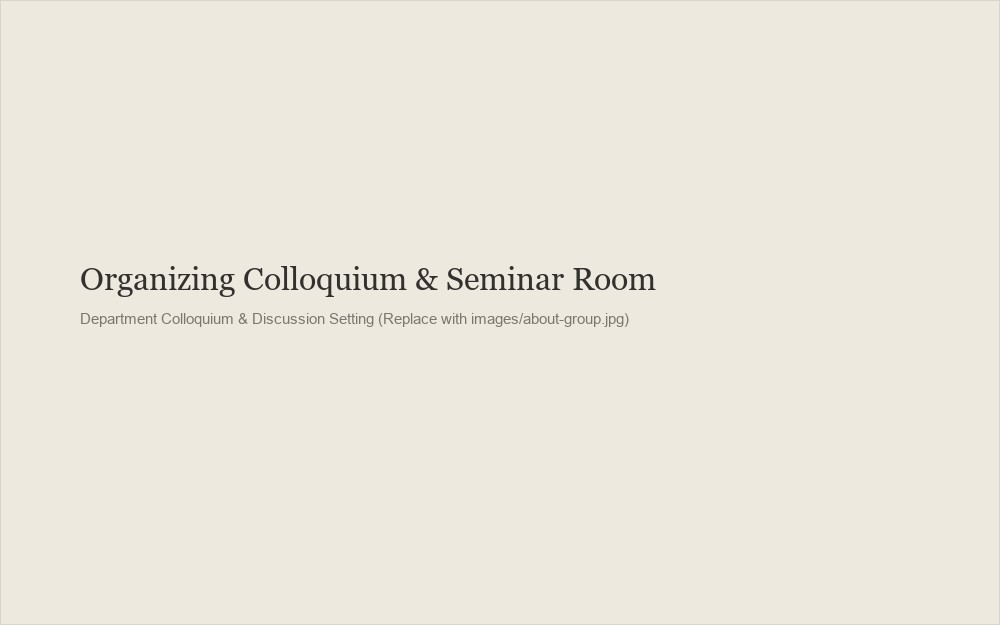

About the Series
Aims, ethos, and organizational structure.
Purpose of the Series
MindScapeS was established to bridge rigorous analytic philosophy of mind with contemporary empirical research in cognitive science, developmental psychology, linguistics, and classical Indian epistemology.
The series provides an ongoing forum to explore foundational questions: How does perceptual experience ground belief and knowledge? What representational formats underpin numerical, spatial, and linguistic cognition? In what ways do conceptual categories interface with sensory input? By inviting leading researchers alongside active commentators, each session aims to test and refine emerging theories.

The Student-First Format
In standard academic colloquia and departmental seminars, question periods are frequently dominated by senior faculty and established researchers. MindScapeS deliberately inverts this convention.
Following every talk, the first round of questioning is reserved strictly for undergraduate students, graduate students, and early-career researchers. This structure exists for two clear reasons:
- Direct engagement: Students gain uninterrupted opportunities to question primary speakers on conceptual points, data, and theoretical tensions.
- Intellectual community: Early-career scholars develop confidence in presenting arguments publicly before faculty commentators and senior colleagues enter the floor.
Senior scholars and faculty are welcomed to participate during the commentators' remarks and the open general discussion that concludes each session.
Who the Series Is For
MindScapeS is organized for undergraduate and graduate students, postdoctoral fellows, university faculty, independent researchers, and thoughtful general readers with an interest in perception, language, mind, and logic. Prior formal background in analytic philosophy or cognitive psychology is helpful but not required; curiosity and careful reading are our primary expectations.
Organizers
The series is coordinated by a small committee of philosophy and cognitive science researchers:
[Organizer Name 1]
Email: [organizer1@institution.edu]